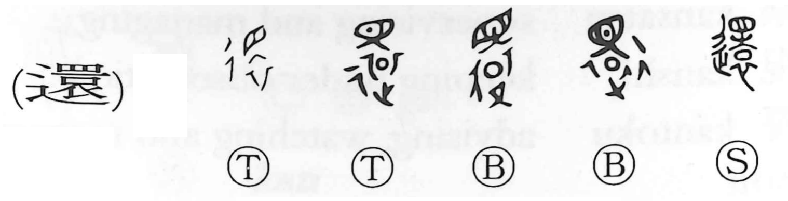

還

Kun: kaeru, kaesu | On: kan
to return ・ to restore
Explanation
A phono-semantic compound. The phonetic element gives the on-yomi kan, while the core graphic shows a funerary rite: a piece of jade set at the collar of the deceased to infuse the soul with vitality, with an eye written above to signify the presence of life and spirit. In its earliest sense the graph expressed a prayer for the dead to be restored to life. With the walking radical 辵 added, the meaning broadened into the idea of turning back or returning, as reflected in compounds like ōkan (“going and coming back”).